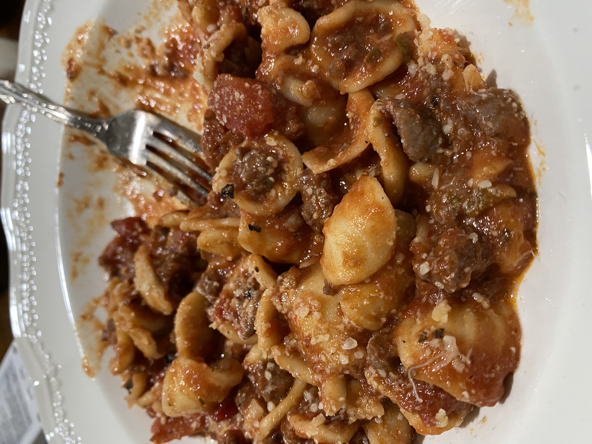

Cream Bolognese Pasta

Description
This recipe is a family favorite. Great for hosting guests, this recipe
will surely get compliments to the chef.
Ingredients
- 2 Tbls Olive Oil
- 1 pound Lean Ground Sirloin
- 4 Tsp minced Garlic(4 cloves)
- 1 Tbls dried Italian Oregano
- 1/4 Tsp crushed Red Pepper flakes
- 1 1/4 cups Dry Red Wine (Divided)
- 1 28oz can Crushed Tomatoes(San Marzano)
- 2 Tbls Tomato Paste
- Kosher Salt as needed
- Fresh Ground Black Pepper as needed
- 1 pound dried pasta (Orecchiette)
- 1/4 Tsp fresh ground Nutmeg
- 1/4 cup fresh chopped Basil Leaves(freshly packed)
- 1/4 cup Heavy Cream
- 1/2 cup freshly grated Parmesano Reggiano